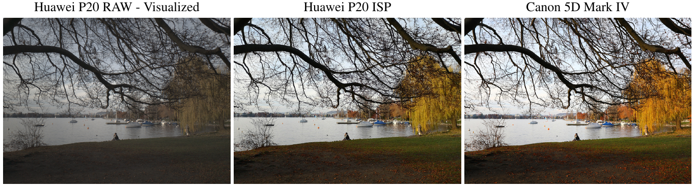
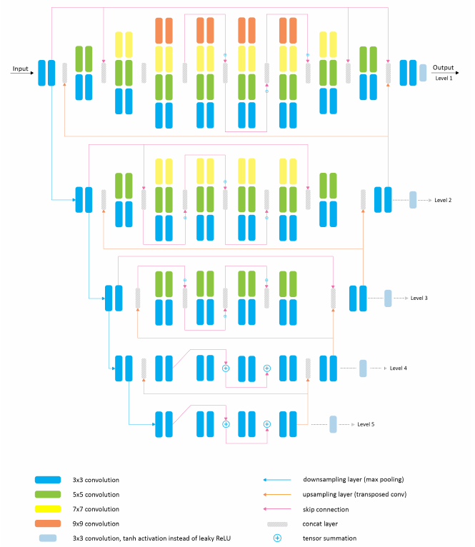
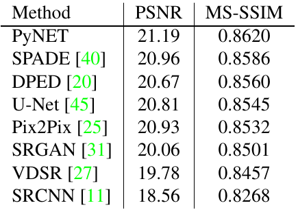
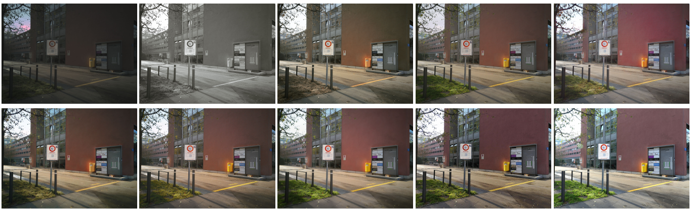
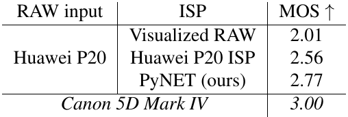
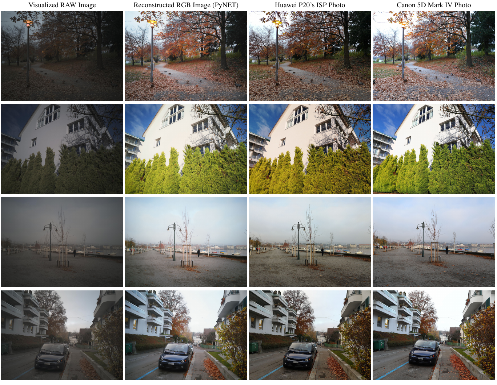
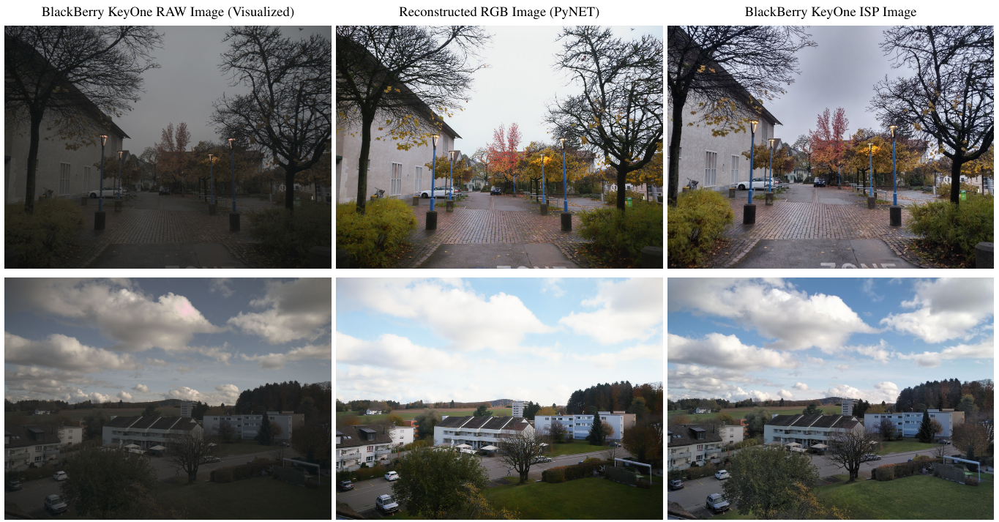

Replacing Mobile Camera ISP with a Single Deep Learning Model

1. 出发点 (Motivation)
手机 ISP（Image Signal Processor）是一条手工设计的流水线。去马赛克、白平衡、降噪、锐化、色彩与 gamma 校正各自由一个模块负责，每个模块都要针对具体的 sensor 和镜头调参 [§1]。论文的判断是：这套流水线已经很复杂，但小 sensor、小镜头带来的细节丢失、高噪声、色彩平庸并没有被解决，只是被「藏」起来了，具体表现是画面被压平，或者出现很多旗舰机都有的「水彩感」（Fig. 2 举了小米 Mi 9、Note10+、iPhone 11 Pro、Pixel 4 XL 等例子）[§1]。
所以作者提出一个范式转变：整条 ISP 只用一个深度模型替代，输入是 sensor 读出的原始 Bayer 数据，目标是专业单反拍的照片。这样做有两层意思：
- 不依赖任何手机 ISP 实现。输入是 RAW，模型直接看 sensor 原值，不像 DPED（dped-2017）那样只能在手机 ISP 已经出好的 JPEG 上「修图」[§2]。
- 目标不是「复刻厂商 ISP」，而是「超过它」。监督信号来自 Canon 5D Mark IV，所以模型学到的上限是单反观感，不是 P20 自己的风格。
这件事难在 RAW→RGB 同时需要全局操作（亮度、白平衡、色彩还原，需要理解整张图）和局部操作（纹理、降噪、去模糊，需要像素级精细度），而且两者需要交互，比如局部调色要知道这块是天空还是树叶 [§4]。作者认为当时的架构二选一：VGG/ResNet/DenseNet 类网络改不动全局，U-Net/Pix2Pix 类网络局部细节差 [§4]。PyNET 的金字塔结构就是为了同时兼顾两头。
ISP
相机里把 sensor 原始读数变成一张能看的照片的那条处理流水线。
Bayer RAW
sensor 每个像素只记录 R/G/B 三色之一（按 2×2 的 RGGB 格子排列），是「单通道马赛克」，还没有被去马赛克、调色。
去马赛克 (demosaicing)
根据周围像素把每个位置缺的两种颜色补出来，得到三通道 RGB。
packing（4 通道打包）
把 H×W 的马赛克按 2×2 格子拆成 R、Gr、Gb、B 四张 H/2×W/2 的图，叠成 4 通道张量喂给 CNN。
VGG 感知损失
把输出和目标都送进预训练 VGG-19，比较中间层特征的差距，衡量「看起来像不像」而不是逐像素相等。
SSIM / MS-SSIM
结构相似度，按局部亮度、对比度、结构三项比较两张图；MS 版本在多个尺度上做。越接近 1 越像。
Instance Norm
对每张图、每个通道单独做均值方差归一化，常用于风格/色调相关的图像变换网络。
MOS
平均主观评分（Mean Opinion Score），让众包用户打分后取平均，本文中 3 表示「与单反相当」。
2. 方法 (Method)
2.1 ZRR 数据集：怎么拿到「手机 RAW ↔ 单反 RGB」的配对
没有现成的数据，作者自己采了 2 万张照片。手机是华为 P20，记录 RAW，同时保存 P20 原厂 ISP 输出的 RGB。单反是 Canon 5D Mark IV + EF 24mm f/1.4L。RAW 读自 P20 主摄的 12.3MP Sony IMX380 Bayer sensor。P20 还有一颗 20MP 黑白副摄，但只有华为内部 ISP 能用，公开 API 拿不到 [§3]。两台机器都用自动模式和默认设置，在几周内跨多种地点、光照、天气拍摄 [§3]。
两台相机位置、视角、镜头都不同，配对图不可能像素对齐。对齐流程沿用 DPED [§3]：
- 全局对齐：SIFT 关键点 + RANSAC 估计整图变换。
- 局部 patch 精对齐：两张图上各开一个 448×448 的滑窗并行无重叠地滑动；DSLR 那一侧的窗口再加小平移和小旋转，取使互相关最大的位置。
- 过滤：互相关 < 0.9 的 patch 直接丢弃，避免大位移。
- 结果是 48,043 对 patch，其中 46.8K 用于训练/验证，1.2K 用于测试。RAW patch 是 448×448×1，打包成 224×224×4；DSLR patch 是 448×448×3。
最值得注意的设计是：所有几何变换都只施加在 DSLR 的 RGB 图上，P20 的 RAW 一个值都没动，保持 sensor 原值 [§3]。这对 RAW 输入很关键，因为对 Bayer 马赛克做插值重采样会把不同颜色的像素混在一起，破坏 CFA 结构。
代码里的打包方式如下。注意它直接除以 \(4\times 255 = 1020\)（P20 的 RAW 是 10-bit），没有减黑电平，也没有乘任何白平衡增益：
repo/load_dataset.py:L11-L23 — Bayer 马赛克 → 4 通道打包 + 归一化
def extract_bayer_channels(raw):
# Reshape the input bayer image
ch_B = raw[1::2, 1::2]
ch_Gb = raw[0::2, 1::2]
ch_R = raw[0::2, 0::2]
ch_Gr = raw[1::2, 0::2]
RAW_combined = np.dstack((ch_B, ch_Gb, ch_R, ch_Gr))
RAW_norm = RAW_combined.astype(np.float32) / (4 * 255)
return RAW_norm
举个数值例子：448×448 的马赛克共 200,704 个像素，每个像素只有一种颜色。按 2×2 格子切开，左上是 R、右上 Gb、左下 Gr、右下 B（代码按 RGGB 布局命名），得到 4 张 224×224 的子图。所以网络输入的空间分辨率只有原图的一半，最后必须再上采样 2 倍才能输出 448×448 的 RGB，这一步就是代码里的「Level 0」。
2.2 PyNET 架构：倒金字塔，5 个尺度

可以把它想象成画家作画：先在一张缩成邮票大小的小图上把整体色调和明暗定下来（Level 5，14×14），然后每放大一倍，就在上一层的结果上补一级细节，最后在原尺寸上精描纹理。
结构要点 [§4.1]：
- 5 个尺度：Level 1 是 224（打包后的原尺度），Level 2–5 依次是 112、56、28、14。
- 多尺寸卷积块：每个块并行跑 3×3 到 9×9 的卷积再拼接。底层只用 3×3，越往上核越大（Level 1 用到 9×9），因为高分辨率层需要更大的感受野来处理纹理。
- 自底向上融合：低层输出经转置卷积上采样后与上一层的特征拼接。
- 激活与归一化：卷积后接 Leaky ReLU，输出层用 tanh；Instance Norm 只在 Level 2–5 使用，Level 1 不用。
多尺寸并行块在代码里是一个按 max_size 叠加分支的函数：
repo/model.py:L139-L167 — _conv_multi_block：3×3 … 9×9 并行双层卷积后沿通道拼接
def _conv_multi_block(input, max_size, num_maps, instance_norm):
conv_3a = _conv_layer(input, num_maps, 3, 1, relu=True, instance_norm=instance_norm)
conv_3b = _conv_layer(conv_3a, num_maps, 3, 1, relu=True, instance_norm=instance_norm)
output_tensor = conv_3b
if max_size >= 5:
conv_5a = _conv_layer(input, num_maps, 5, 1, relu=True, instance_norm=instance_norm)
conv_5b = _conv_layer(conv_5a, num_maps, 5, 1, relu=True, instance_norm=instance_norm)
output_tensor = stack(output_tensor, conv_5b)
if max_size >= 7:
conv_7a = _conv_layer(input, num_maps, 7, 1, relu=True, instance_norm=instance_norm)
conv_7b = _conv_layer(conv_7a, num_maps, 7, 1, relu=True, instance_norm=instance_norm)
output_tensor = stack(output_tensor, conv_7b)
if max_size >= 9:
conv_9a = _conv_layer(input, num_maps, 9, 1, relu=True, instance_norm=instance_norm)
conv_9b = _conv_layer(conv_9a, num_maps, 9, 1, relu=True, instance_norm=instance_norm)
output_tensor = stack(output_tensor, conv_9b)
return output_tensor
最底层（Level 5）是 4 个 512 通道的 3×3 块，带两处残差相加。它的输出头说明了每一层「都能单独出一张图」：
repo/model.py:L26-L40 — Level 5（14×14）处理块 + 本层输出头
# -----------------------------------------
# Processing: Level 5, Input size: 14 x 14
conv_l5_d1 = _conv_multi_block(pool4, 3, num_maps=512, instance_norm=instance_norm)
conv_l5_d2 = _conv_multi_block(conv_l5_d1, 3, num_maps=512, instance_norm=instance_norm) + conv_l5_d1
conv_l5_d3 = _conv_multi_block(conv_l5_d2, 3, num_maps=512, instance_norm=instance_norm) + conv_l5_d2
conv_l5_d4 = _conv_multi_block(conv_l5_d3, 3, num_maps=512, instance_norm=instance_norm)
conv_t4a = _conv_tranpose_layer(conv_l5_d4, 256, 3, 2) # 14 -> 28
conv_t4b = _conv_tranpose_layer(conv_l5_d4, 256, 3, 2) # 14 -> 28
# -> Output: Level 5
conv_l5_out = _conv_layer(conv_l5_d4, 3, 3, 1, relu=False, instance_norm=False)
output_l5 = tf.nn.tanh(conv_l5_out) * 0.58 + 0.5
顶上还有一层论文只用一句话带过的「额外转置卷积」[§4.1]，即代码里的 Level 0，负责 224→448 的 2× 上采样（repo/model.py:L128-L134）。它只有一层 8 通道转置卷积加一层 3×3 输出卷积，非常薄。也就是说，从半分辨率打包张量恢复到全像素分辨率的「去马赛克」那一步，几乎全部压在 Level 1 的特征里，Level 0 只做一次轻量重排。
2.3 逐层训练与分层损失
训练是自底向上逐层进行的：先只训 Level 5 让它在 14×14 上把全局颜色做对，然后加载这个权重训 Level 4，依此类推，直到原分辨率 [§4.1]。每一层训练时，所有已经预训练过的下层一起更新，不冻结 [§4.2]。
目标图也按层缩小：第 \(k\) 层的输出分辨率是 \(448/2^{k}\)，DSLR 目标用 bicubic 缩到同样大小。论文给出的各层损失 [§4.2]：
—— 翻译：缩到 1/8、1/16 的小图上看不出纹理，只看颜色对不对，所以用逐像素 MSE；1/2、1/4 的图开始有物体形状，加上 VGG 感知损失（VGG:MSE = 4:1）让物体的颜色和形状「看起来对」；原尺度主要管纹理和噪声，VGG 为主，SSIM 用来拉大动态范围，MSE 只留很小权重，防止颜色跑偏。论文说每项损失都「归一化到 1」后再加权。
其中 VGG 损失是 VGG-19 relu5_4 层特征的均方差：
—— 翻译：$\hat y$ 是网络输出，$y$ 是单反目标，$\phi$ 把图送进 ImageNet 预训练 VGG-19 取第 5 组最后一层的特征。两张图在这一层的「语义 + 纹理特征」越接近，损失越小，$N$ 是特征元素总数。它不要求像素一一相等，所以对轻微错位更宽容。
代码里的实现与论文措辞不完全一致（见 §4）：
repo/train_model.py:L74-L92 — VGG content loss 与按 LEVEL 切换的损失组合
# Content loss
CONTENT_LAYER = 'relu5_4'
enhanced_vgg = vgg.net(vgg_dir, vgg.preprocess(enhanced * 255))
dslr_vgg = vgg.net(vgg_dir, vgg.preprocess(dslr_ * 255))
content_size = utils._tensor_size(dslr_vgg[CONTENT_LAYER]) * batch_size
loss_content = 2 * tf.nn.l2_loss(enhanced_vgg[CONTENT_LAYER] - dslr_vgg[CONTENT_LAYER]) / content_size
# Final loss function
if LEVEL == 5 or LEVEL == 4:
loss_generator = loss_mse * 100
if LEVEL == 3 or LEVEL == 2:
loss_generator = loss_mse * 100 + loss_content
if LEVEL == 1:
loss_generator = loss_mse * 50 + loss_content
if LEVEL == 0:
loss_generator = loss_mse * 20 + loss_content + (1 - loss_ssim) * 20
逐层训练靠「加载上一层 checkpoint + 优化全部 generator 变量」实现：
repo/train_model.py:L94-L108 — 全部 generator 变量参与优化；LEVEL<5 时从 level+1 的 checkpoint 恢复
# Optimize network parameters
generator_vars = [v for v in tf.global_variables() if v.name.startswith("generator")]
train_step_gen = tf.train.AdamOptimizer(learning_rate).minimize(loss_generator, var_list=generator_vars)
# Initialize and restore the variables
print("Initializing variables")
sess.run(tf.global_variables_initializer())
saver = tf.train.Saver(var_list=generator_vars, max_to_keep=100)
if LEVEL < 5:
print("Restoring Variables")
saver.restore(sess, "models/pynet_level_" + str(LEVEL + 1) + "_iteration_" + str(restore_iter) + ".ckpt")
var_list 是所有 generator 变量，但损失只依赖当前层输出，所以实际只有参与当前输出的子图会收到梯度。这正对应论文「只训练训练图的一部分」[§4.1]，同时下层也被一起微调 [§4.2]。
3. 结论 (Key findings)

定量：PyNET PSNR 21.19 / MS-SSIM 0.8620，次优是 SPADE（20.96 / 0.8586），之后是 Pix2Pix 20.93、U-Net 20.81、DPED 20.67、SRGAN 20.06、VDSR 19.78、SRCNN 18.56 [§5.1, Table 1]。注意 PyNET 只领先第二名 0.23 dB；所有方法的 PSNR 都只有 21 dB 上下，这个绝对值很低，主要原因是跨相机配对残留的错位和色差，并不说明模型普遍很差。后续工作都把这一点当作 ZRR 的主要困难（见 §5）。

主观：MTurk 用户研究，以 Canon 图为参照打 1–5 分（3 = 与单反相当），每对 20 人，共 5,000 条意见 [§5.2]。

- PyNET 2.77 高于 P20 ISP 的 2.56，但仍低于单反（3.00）。
- 直接用 PyNET 作参照让用户评 P20 ISP，得分 2.92（< 3），即 P20 ISP 略差于 PyNET [§5.2]。
- 定性上，PyNET 颜色更亮、局部纹理更自然，但锐度略低于 P20 ISP。作者推测是 P20 的黑白副摄参与了锐化，而 PyNET 只看主摄 RAW [§5.1]。论文也承认两者都在色彩和纹理上不如 Canon [§5.1]。

跨设备：直接把 P20 上训练的模型用于 BlackBerry KeyOne（Sony IMX378，光学系统完全不同）的 RAW（用 Snap Camera HDR 采集）。颜色基本能还原，噪声被大量去除，但曝光和锐度不理想，细节少于 KeyOne 自家 HDR 模式 [§5.3]。

速度与规模：47.5M 参数，单张 V100 处理一张 12MP 图（2944×3958）需要 3.8 秒 [§4.3]，离手机端实时还很远。
4. 实现细节 (Implementation notes)
逐项对照论文与官方 TensorFlow 仓库（aiff22/PyNET）：
- 论文的「Level 1 损失」在代码里属于 Level 0。论文 §4.2 写 Level 1 使用 VGG + 0.75·SSIM + 0.05·MSE；代码中
LEVEL == 1只有50·MSE + content，SSIM 项只出现在LEVEL == 0（20·MSE + content + 20·(1−SSIM)）（repo/train_model.py:L89-L92）。论文把最后的 2× 上采样层当作 Level 1 的附属，代码把它单列为第 6 个训练阶段。这是一处论文与代码的不一致。 - 权重比例无法从代码直接复核。论文说 Level 2–3 的 VGG:MSE = 4:1、各损失「归一化到 1」；代码写的是
100·MSE + content（repo/train_model.py:L87-L88），没有任何显式归一化。100 倍是否恰好让两项量级达到 4:1，取决于训练时的实际数值，代码里没有体现。复现时应以代码系数为准。 - 输出范围不是 (−1, 1)。论文说 tanh 把结果映射到 (−1, 1) [§4.1]，代码是
tanh(x) * 0.58 + 0.5，范围约 (−0.08, 1.08)（repo/model.py:L40,L134），目标图归一化到 [0, 1]（repo/load_dataset.py:L75）。稍微超出 [0,1] 的余量让网络不必把 tanh 推到饱和区就能输出纯黑、纯白。 - 框架版本：论文写「TensorFlow 2」实现 [§4.3]，仓库实际用 TF1 API（
tf.placeholder、tf.Session，repo/train_model.py:L32-L37），README 的依赖也写 TensorFlow 1.X；另有官方 PyTorch 版aiff22/PyNET-PyTorch。 - RAW 预处理极简：只除以 1020，不减黑电平、不做白平衡、不读任何 DNG 元数据（
repo/load_dataset.py:L11-L23）。黑电平、白平衡、色彩矩阵、镜头暗角全部要由网络从数据里隐式学会。这也解释了为什么输出会残留暗角 [§5.1]，以及为什么跨 sensor 时曝光会偏（§3）。 - 目标逐层 bicubic 缩小：
misc.imresize(I, DSLR_SCALE / 2, interp='bicubic')，其中DSLR_SCALE = 1/2^(LEVEL−1)（repo/load_dataset.py:L73-L76,repo/train_model.py:L22）。Level 0 时缩放比为 1，即原 448×448 目标。
repo/load_dataset.py:L69-L76 — 读打包 RAW 与按层缩小的 DSLR JPEG 目标
I = np.asarray(imageio.imread((train_directory_phone + str(img) + '.png')))
I = extract_bayer_channels(I)
train_data[i, :] = I
I = np.asarray(Image.open(train_directory_dslr + str(img) + '.jpg'))
I = misc.imresize(I, DSLR_SCALE / 2, interp='bicubic')
I = np.float16(np.reshape(I, [1, int(PATCH_WIDTH * DSLR_SCALE), int(PATCH_HEIGHT * DSLR_SCALE), 3])) / 255
train_answ[i, :] = I
- 目标是 Canon 的 JPEG：训练目标从
train/canon/<i>.jpg读取（上方代码 L73），手机侧是train/huawei_raw/<i>.png（L69）。所以监督信号是单反机内 JPEG 引擎的输出（含 Canon 的色彩风格、色调曲线和 JPEG 压缩），不是单反 RAW。 - 数据增强对打包后的 Bayer 做 rot90 / flipud（
repo/train_model.py:L143-L154）。这是我的分析，论文和代码都没讨论：对 4 通道打包张量做旋转/翻转，会让同一通道在原 2×2 格子内的真实子像素位置相对目标图发生变化（例如 R 原本在左上，翻转后对应的应是左下），但通道顺序不变，网络看到的 CFA 相位就和真实几何不一致，相当于引入了约 1 像素量级的颜色通道错位。更严谨的做法是在马赛克域翻转后重新对齐到 RGGB 相位，或者只做保持相位的增强。
repo/train_model.py:L143-L154 — 对打包 RAW 与目标同步做随机 rot90 / 上下翻转
# Random flips and rotations
for k in range(batch_size):
random_rotate = np.random.randint(1, 100) % 4
phone_images[k] = np.rot90(phone_images[k], random_rotate)
dslr_images[k] = np.rot90(dslr_images[k], random_rotate)
random_flip = np.random.randint(1, 100) % 2
if random_flip == 1:
phone_images[k] = np.flipud(phone_images[k])
dslr_images[k] = np.flipud(dslr_images[k])
- 训练长度用迭代数而非 epoch：论文写 5–20 epochs [§4.3]；代码默认各层迭代数为 Level 5→0 依次 5K、5K、20K、20K、35K、100K（
repo/utils.py:L9），每 1000 步从训练集随机重采一个子集进内存（repo/train_model.py:L218-L223）。子集大小默认train_size = 5000（repo/utils.py:L19），README 写的默认值是 30000，两者不一致。 - 全分辨率推理会裁剪：
test_model.py把打包输入裁成 1472×1984（repo/test_model.py:L14,L65），对应 2944×3968 的输出。DNG 转换脚本dng_to_png.py把rawpy读出的整张马赛克存成 uint16 PNG，里面算出的四个通道其实没有用到（repo/dng_to_png.py:L38-L43）。所以这个仓库里没有任何读取黑电平、白平衡或 CCM 的代码。 - 评测：PSNR 和 MS-SSIM 逐 patch 计算再平均，目标是 448×448 的原尺度 Canon patch（
repo/evaluate_accuracy.py:L37-L40,L56-L70）。没有对测试对做额外的对齐补偿，残余错位会直接计入误差。
5. 批判性总结 (Critical assessment)
Strengths
- 问题定义干净：「手机 RAW → 单反 RGB」这个设定第一次把整条 ISP 作为一个学习问题，并配了真实数据。ZRR 后来成为 AIM 2019/2020 Learned ISP 挑战赛和大量 RAW-to-sRGB 工作的标准基准。
- RAW 侧零重采样：所有对齐变换只作用在目标图上，保证输入就是 sensor 原值 [§3]。凡是从 RAW 出发的配对数据，这都是应该照抄的原则。
- 金字塔分工与损失分工对应：低分辨率层负责全局颜色/亮度（MSE），高分辨率层负责纹理（VGG/SSIM）。架构、损失、训练顺序三者在设计上是一致的。
- 复现友好：代码、预训练权重、数据集都公开，代码不到 1000 行，很容易逐行对照。
Limitations / open questions
- 没有消融。逐层训练、多尺寸卷积块、Instance Norm、损失配比都没有单独去掉做对比，Table 1 只对比了整体架构。「金字塔 + 逐层训练是关键」这个说法没有实验直接支撑，0.23 dB 的领先也可能部分来自参数量（47.5M）。
- 监督信号包含错位和风格。跨相机配对只做到互相关 ≥ 0.9，残余的视差、镜头畸变、景深差异都会留在训练目标里。MSE/SSIM 类损失面对错位目标时会把输出拉向平均，表现为锐度偏低（论文自己观察到 [§5.1]）。作者把锐度差归因于 P20 的黑白副摄，但没有做实验排除「损失 + 错位导致发糊」这个更直接的解释。
- 0.9 互相关阈值带来选择偏差。互相关高的往往是结构清晰、运动少的 patch，近景、运动物体、强视差区域更容易被过滤掉，训练分布偏向「容易对齐的远景」。
- 颜色和纹理纠缠在一个网络里。白平衡、色彩矩阵、黑电平都没有显式输入（§4 第 5 条），模型只能从图像内容「猜」光源。这对单一 sensor、单一数据分布有效，但跨 sensor 时颜色和曝光就出问题（§3 BlackBerry 实验）。
- 单帧。只用一帧 RAW，暗光下的噪声和细节上限受限于单帧 SNR，P20 自家 ISP 能用到的多帧/双摄信息模型完全没有。
- 评测薄弱：PSNR 在错位数据上意义有限，没有报告 LPIPS 等感知指标；MOS 只比较了 3 个 ISP，且以 Canon 图为参照，评分者看到的是「像不像 Canon」，而不是绝对画质。
- 实用性：12MP 图 3.8 s/V100，47.5M 参数，离手机端部署差几个数量级。
When to use / not use
- 用：需要一个 RAW→sRGB 的强基线；想在一个 sensor 上从配对数据学目标相机的整体观感；构造自己的跨相机配对数据集时参考对齐流程。
- 不用：需要真实高频纹理生成（回归式损失会糊）；需要跨 sensor 泛化或可控的颜色（没有元数据通路）；需要端侧实时。
延伸阅读 (Further reading)
交叉验证比较——同一问题（手机 → 单反观感 / learned ISP）上的几条代表性路线：
| 工作 | 核心结论 | 关键观察 | 与本文的异 / 同 |
|---|---|---|---|
| 本文 PyNET | 一个金字塔 CNN 就能从手机 Bayer RAW 学到超过原厂 ISP 的观感（MOS 2.77 vs 2.56） | 锐度不及原厂 ISP；暗角残留；跨 sensor 曝光偏 | — |
| dped-2017 DPED | 手机 JPEG → 单反 JPEG 的弱对齐映射可学，靠「颜色损失（模糊后比较）+ 纹理 GAN + VGG 内容损失」 | 用对抗损失补纹理，用模糊颜色损失容忍错位 | 同：同一作者、同一对齐流程（SIFT+RANSAC+互相关）、同样以单反为目标。异：DPED 的输入是手机 ISP 出好的 JPEG，PyNET 输入 RAW；DPED 用 GAN 学纹理，PyNET 只用回归 + 感知损失 |
| liteispnet-2021 LiteISPNet（Zhang et al., ICCV 2021） | ZRR 的主要困难是监督目标的空间错位与色差，训练时应该先把目标对齐到输入再算损失 | 用光流把目标 warp 到 RAW 的几何（先做全局颜色映射再估光流），在 ZRR 上 PSNR 高于 PyNET（后续文献报告约 21.55 vs 21.19） | 同：同样在 ZRR 上从 P20 RAW 学 Canon sRGB。异：PyNET 把错位当噪声硬扛，LiteISPNet 显式建模错位；网络也小得多 |
| handheld-mfsr-2019 Handheld MFSR（Wronski et al., 2019） | 手持连拍的自然抖动可以替代去马赛克，多帧合并直接得到更高真实分辨率 | 细节来自真实多帧采样，不靠网络「猜」 | 异：PyNET 单帧学习式、细节受限于单帧；MFSR 多帧经典算法、细节可信。互补：MFSR 提供真实信息，学习式模型负责风格/观感 |
分歧的可能成因：PyNET 和 LiteISPNet 用的是同一份数据，分歧在于怎么对待错位。PyNET 认为互相关过滤后剩下的错位可以忽略，LiteISPNet 证明剩下的错位仍然会让回归损失把输出拉糊。DPED 与 PyNET 的分歧在于纹理从哪来：DPED 认为必须用对抗损失生成，PyNET 认为感知损失 + 多尺度架构就够了。PyNET 自己观察到的「锐度偏低」更支持 DPED 和 LiteISPNet 的立场。
相关工作
- dped-2017：同作者的前作，手机 JPEG → 单反。
- liteispnet-2021：在 ZRR 上显式处理错位监督。
- handheld-mfsr-2019：多帧手持超分，提供真实细节的路线。
6. 研究启发 (Transferable takeaways)
下面结合专项「手机照片 → 相机画质：细节与质感迁移」来看。目标是把 iPhone 照片（优先从 Bayer RAW 出发）在细节和质感上迁移成某台目标相机的效果；已有思路是：颜色用 DNG 色彩矩阵 / 色卡做物理对齐，生成模型只补高频纹理，多帧合成提供真实信息。
1. ZRR 不含单反 RAW，目标是 Canon JPEG
核实结果：官方代码的训练目标读自 train/canon/*.jpg（repo/load_dataset.py:L73），项目页和论文只提供 Canon RGB 图。后续文献（W-Net、Modular Neural ISP 等）也指出 ZRR 不提供 DNG 及白平衡/CCM 等元数据，且只有测试集带全分辨率 RAW，训练集只有 patch。所以拿 ZRR 学到的是「P20 RAW → Canon 机内 JPEG 风格」，颜色、色调曲线和纹理全混在一起。如果想把颜色交给物理方法、只让网络学纹理，ZRR 做不到干净拆分，需要自己采集「iPhone DNG ↔ 目标相机 RAW」的配对。
2. 照抄：几何变换只动目标，RAW 保持原值
ZRR 的对齐只 warp DSLR 侧，RAW 一个值都不改 [§3]。自建 iPhone ↔ 目标相机数据集时直接沿用：SIFT/RANSAC 全局对齐 → 448 级 patch 上小平移/旋转搜索互相关最大位置 → 低于阈值的丢弃。但要意识到阈值越高、训练分布越偏向容易对齐的场景；更好的做法是像 LiteISPNet 那样再加光流精对齐，或者用对错位不敏感的损失。
3. 金字塔分工 ≈「低频物理、高频学习」
PyNET 在 1/8、1/16 分辨率上用 MSE 学全局颜色/亮度，在原尺度上用感知损失学纹理。这和「颜色物理对齐 + 生成模型补高频」的分工是同一个思路，只是 PyNET 把低频那半也交给了网络。可借鉴的改法：把 Level 4–5 替换成 DNG 矩阵 / 色卡标定的确定性管线（黑电平 → 白平衡 → CCM → 目标相机色调），网络只负责残差纹理，颜色就不再从内容里「猜」了，跨场景、跨光源也更稳。
4. 回归损失学不出「质感」
PyNET 输出的锐度不及原厂 ISP，跨相机目标又有残余错位，MSE/SSIM/VGG 都会把高频平均掉。专项的核心恰恰是细节和质感，所以高频部分需要能处理分布的方法（GAN / 扩散 / 多帧真实信息），而不是 PyNET 式的纯回归。PyNET 适合当「颜色/色调 + 去马赛克」基线，或者当生成模型的条件输入。
5. 元数据通路是跨设备泛化的前提
代码不减黑电平、不读 WB/CCM（§4 第 5 条），换到 BlackBerry 后颜色基本对但曝光、细节都差 [§5.3]。iPhone 的 DNG 自带黑/白电平、AsShotNeutral、ColorMatrix/ForwardMatrix，应先用这些做物理归一化，再交给网络，这样模型面对的是更接近「设备无关」的场景线性 RGB，不用重新学每台设备的 sensor 响应。
6. 反直觉点：PSNR 21 dB 也能赢原厂 ISP
PSNR 只有 21.19 dB，主观评分却超过了华为旗舰的 ISP。这说明在跨相机配对任务上 PSNR 主要在测「错位 + 色差」，几乎测不到观感。做专项评测时应该以感知指标、对齐后的局部指标和主观评测为主，不要拿 PSNR 排序。